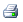
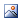
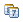
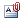
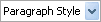
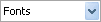

Ctrl+Enter


| GENERAL KNÖPFE | ||
|
Entwurfknopf - Schaltet r.a.d.editor in Entwurfmodus. | - |
| HTML Knopf - Schaltet r.a.d.editor in HTML Modus. | - | |
|
Vorschauknopf - Schaltet r.a.d.editor in Vorschaumodus. | - |
| Umschaltschirmmodus - Schaltet r.a.d.editor in Vollbildmodus. | - | |
| Zeige/Verstecke Rahmen - Zeigen/Verstecken Sie Rahmen um Tische im Inhaltgebiet. | - | |
| Modulmanager - Aktiviert /Deaktiviert Moduln von einem drop-down Liste verfügbarer Moduln. | - | |
| Schalten Sie Docken um - Dockt alle schwebenden Werkzeugleisten zu ihren jeweiligen dockenden Gebieten. | - | |
| Wiederholen Sie Letzten Befehl - Eine Abkürzung, um die letzte Handlung zu wiederholen. | - | |
| Suchen uns Ersetzen - findet und ersetzt Text im Editor. | Ctrl+F | |
|  | Druck-Knopf - druckt den Inhalt des r.a.d.editors oder der gesamten Internetseite. | Ctrl+P |
|
Rechtschreibung - startet den Assistenten für die Rechtschreibung. | - |
|
Ausschneide-Knopf - schneidet den markierten Bereich aus und kopiert ihn in die Zwischenablage. | Ctrl+X |
|
Kopier-Knopf - kopiert den markierten Bereich in die Zwischenablage. | Ctrl+C |
|
Einfügen-Knopf - fügt den Inhalt der Zwischenablage in den Editor ein. | Ctrl+Y |
|
Fugen Sie Standardtext ein Knopf - Fugt Standardtext (keine Formatierung) in den r.a.d.editor. | - |
|
Fugen Sie von Word ein Knopf - Fugt Inhalt Ein, der von Wort kopiert wurde und nimmt heraus das Gewebe unfreundliche. | - |
|
Fügen Sie als HTML Knopf - Fügt HTML Code im Inhaltgebiet ein und behält alle HTML Tagen. | - |
|
Rückgängig-Knopf - macht den letzten Arbeitsschritt rückgängig. | Ctrl+Z |
|
Wiederholen-Knop - wiederholt den letzten Schritt, der rückgängig gemacht wurde. | Ctrl+Y |
| Formatierungs-Knopf - entfernt alle Formatierungen (auch benutzerdefinierte) aus dem Text. | - | |
|
Direkthilfe - der Bildschirm den Sie gerade betrachten. | - |
| About Dialog - Zeigt die jetzige Version und die Befähigungsunterlagen von r.a.d.editor. | - | |
| Tabellen, Links, Sonderzeichen, Bilder und Medien einfügen und verwalten | ||
|  | Bild einfügen - fügt ein Bild aus einem vordefinierten Verzeichnis ein. | Ctrl+G |
|
Bildniskarte - Erlaubt, dass Verbraucher anklickbare Gebiete innerhalb Bildnis definieren. | - |
| Absolute Position - legt ie absolute Position eines Objektes fest (frei beweglich). | - | |
|
Tabelle einfügen - fügt eine Tabelle in den r.a.d.editor ein. | - |
|
Toggle Table Borders - Toggles borders of all tables within the editor. | - |
| Code Elemente einfügen - fügt vorgefertigte Code Elemente ein. | - | |
|
Fugen Sie Formelement ein - Fugt ein Formelement von einem Droop Down Liste mit verfugbaren Elementen Ein. | - |
|  | Fügen Sie Datum Knopf ein - Fügt jetziges Datum Ein. | - |
|
Fügen Sie Zeit der Knopf ein - Fügt jetzige Zeit Ein. | - |
| Flash einfügen - fügt eine Flash-Animation ein und läßt sie ihre Eigenschaften verändern. | - | |
|
Windows Media einfügen - fügt ein Windows Media Objekt (AVI, MPEG, WAV, etc.) ein und läßt sie die Eigenschaften ändern. | - |
|  | Dokument einfügen - fügt ein Dokument in den Editor ein. | - |
| Link erstellen - Macht aus dem ausgewählten Text, Nummer oder Bild einen Hyperlink. | Ctrl+K | |
| Link entfernen - entfernt einen Link aus dem gewählten Text, Nummer oder Bild. | Ctrl+Shift+K | |
| Sonderzeichen einfügen - fügt Sonderzeichen ein. | - | |
| Benutzerdefinierten Link hinzufügen - fügt einen internen oder externen Link aus einer vorgefertigten Liste hinzu. | - | |
|
Wählen Sie HTML Modellrahmen - Verwendet einen HTML Modellrahmen von einer vordefinierten Liste der Modellrahmen. | - |
| ERSTELLEN, FORMATIEREN UND BEARBEITEN von ZEICHEN UND LINIEN | ||
|
Neues Zeichen einfügen - fügt ein neues Zeichen ein. |
Ctrl+M Ctrl+Enter |
|  | Standard-Zeichen Auswahlfeld - fügt Standard-Eigenschaften zu dem ausgwählten Text zu. | - |
|
Links Ausrichten - richtet Zeichen links aus. (Indent?) | - |
|
Rechts ausrichten - richtet Zeichen recht aus. | - |
| Horizontale Linie (z.B. horizontale Regel?) - fügt eine horizontale Linie bei dem Cursor ein. | - | |
| Links ausrichten - richtet die ausgewählten Zeichen links aus. | - | |
|
Mittig ausrichten - richtet die ausgewählten Zeichen in der Mitte aus. | - |
|
Rechts ausrichten - richtet die ausgewählten Zeichen rechts aus. | - |
|
Numerierte Liste - erstellt aus der Markierung eine numerierte Liste. | - |
|
Aufzählungszeichen - erstellt aus der Markierung eine Liste mit Auszählungszeichen. | - |
| ERSTELLEN, FORMATIEREN UND BEARBEITEN von TEXT, SCHRIFTART und LISTEN | ||
|
Fett - formatiert den markierten Text fett. | Ctrl+B |
|
Kursiv - formatiert den markierten Text kursiv. | Ctrl+I |
|
Unterstrichen - unterstreicht den markierten Text. | Ctrl+U |
|
Hochgestellt - formatiert Text oder Nummern als hochgestellt. | - |
|
Tiefgestellt - formatiert Text oder Nummern als tiefergestellt. | - |
|  | Schriftart - Schriftart wählen. | - |
| Schriftgröße - Schriftgröße ändern. | - | |
|
Textfarbe (Vordergrund) - ändert die Vordergrundfarbe des ausgewählten Textes. | - |
|
Textfarbe (Hintergrundbild) - ändert die Hintergrundbild des ausgewählten Textes. | - |
|
Benutzerdefinierte Formate - fügt benutzerdefinierte, vordefinierte Formatierungen zum ausgewählten Text hinzu. | - |
| ANDERE TASTENKOMBINATIONEN | ||
| - | Markiert den gesamten Text, alle Bilder und Tabellen im Editor | Ctrl+A |
| - | Findet Text oder Zahlen im aktuellen Dokument. | Ctrl+F |
| - | Schließt das aktive Fenster. | Ctrl+W |
| - | Schließt die aktive Anwendung. | Ctrl+F4 |